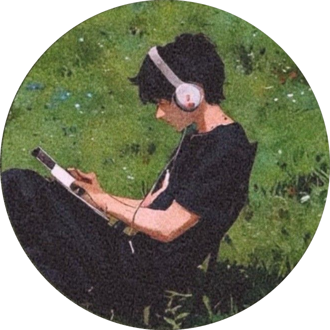

My name's Phoenix, and I'm currently in Class 11 — though if you asked what I spend most of my time on, school probably wouldn't be the first thing I mention. I've been studying Carnatic music and learning veena for about 10 years now. That journey taught me something no tutorial ever could: real skill takes patience, repetition, and a genuine willingness to sit with something until you actually get it.
On the tech side, I'm deep into Android — building apps, porting custom ROMs, and designing interfaces. I care about how things work under the hood just as much as how they look on screen. I'm not here to fake expertise or take shortcuts. I want to understand things properly, even if it takes longer.
Probably what excites me the most right now. I'm learning Kotlin, getting into Jetpack Compose, and trying to understand how Android really works — the architecture, the lifecycle, all of it.
Primary FocusI've always needed to know what's happening behind the screen. That curiosity led me to custom ROMs — device trees, kernel configs, vendor blobs. I ported HyperOS 2 to the Samsung M34.
Active BuilderI notice when apps feel off — a button in the wrong spot, weird spacing, clunky transitions. Currently going deeper into design systems, motion, and the psychology behind good interfaces.
Going Deeper10 years of Carnatic music and currently learning veena. It's taught me discipline, pattern recognition, and how to focus deeply on one thing for hours. My work ethic traces back to those years.
10 Year JourneyI don't want to be someone who just prompts an AI and calls it coding. I'm learning data structures, algorithms, and how systems work underneath. It's slower but the understanding is worth it.
Leveling UpTook Xiaomi's HyperOS 2 and got it running on the Samsung Galaxy M34. Modified device trees, patched drivers, spent way too many late nights debugging. Watching that first boot animation was worth every second.
You're looking at it. Built from scratch with HTML, CSS, and vanilla JS. No frameworks, no libraries — just to prove I could ship a real site without leaning on abstractions.
Got a few things cooking — Android apps with Jetpack Compose, more ROM ports, and some UI/UX case studies. This section will fill up. Give me a little time.
Began learning one of the world's most intricate classical music traditions and picked up the veena. It would shape my entire approach to learning.
Realized you could build apps and even change how a phone's entire OS works. Started learning, broke things, never looked back.
Went from flashing other people's ROMs to building my own. Ported HyperOS 2 to the Samsung M34 — the project that changed everything.
Balancing school with everything else. Learning to code properly, diving deeper into UI/UX, continuing veena. The goal: be genuine.
Whether you want to collaborate on a project, chat about Android, or just say hi — my DMs are always open.